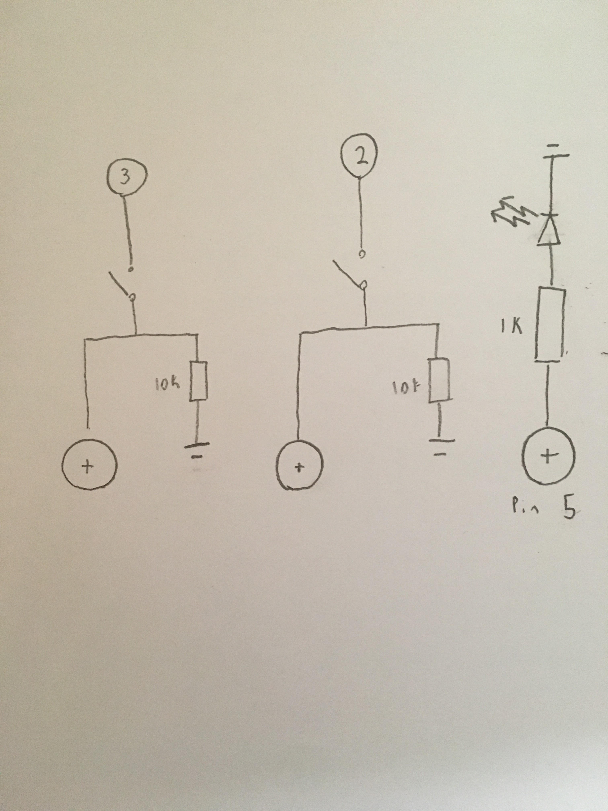

Espen Scheuers's Assignment 2!
Here is a video of assignment 2.

Here is a photo of assignment 2.

The led is rated for about 20 milli amps A (=0.02A) and the arduino has 5 volts
Using Ohms law: R = V / I = 5 / 0.02 = 250) so I choose one close to that but higher 1000
For the button resistor, it needs to limit the flow from power to ground
so you can use higher resistance I chose 10k.

Here is the code for assignment 2:
//Sets the initial brightness value for the LED
int value = 10;
void setup() {
// Sets up the pins for later
pinMode(6, OUTPUT);
pinMode(2, INPUT);
pinMode(3, INPUT);v
}
void loop() {
// If one of the buttons is pushed increase the value
if(digitalRead(2) == HIGH && value <= 245) {
value = value + 10;
}
// If the other button is pushed decrease the value
if(digitalRead(3) == HIGH && value >= 10) {
value = value - 10;
}
// Gradually increase the brightness until you reach the value creating a pulsing effect
for(int i = 0; i < value; i += 20) {
analogWrite(6,i);
delay(100);
}
// Turn the pin at the brightness for a certain amount of time
analogWrite(6, value);
delay(100);
}